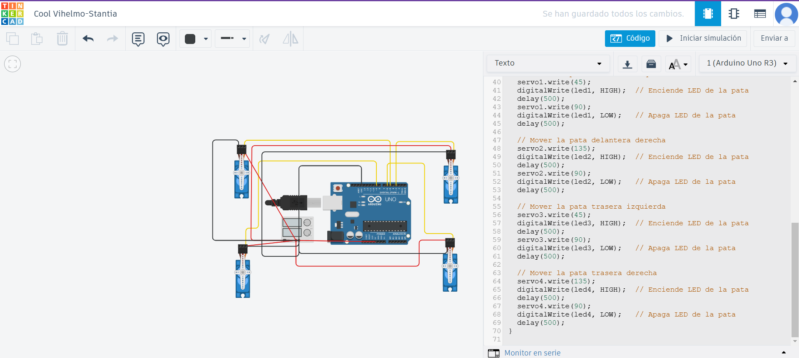
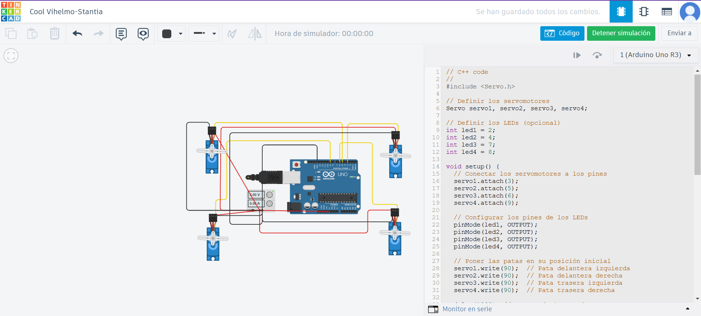

Actividad 4.
Creación y Movimiento de las Patas del Robot Araña.
Objetivo: Crear las patas del robot araña utilizando servomotores y programarlas para simular un movimiento básico de caminata.
Materiales en Tinkercad:
- 4 Servomotores (representando las 4 patas)
- Arduino Uno R3
- Cables de conexión
Instrucciones:
- Preparación del Circuito:
- Conecta 4 servomotores a los pines digitales 3, 5, 6, 9 del Arduino.
- Conecta cada servomotor a un pin de alimentación de 5V y a GND.
- Diseño del Movimiento:
- Vamos a hacer que las patas del robot se muevan en secuencia, como si estuviera caminando. El movimiento se logra ajustando el ángulo de cada servomotor.
Código del movimiento de los servomotores:
#include <Servo.h>
// Definir los servomotores
Servo servo1, servo2, servo3, servo4;
// Definir los LEDs (opcional)
int led1 = 2;
int led2 = 4;
int led3 = 7;
int led4 = 8;
void setup() {
// Conectar los servomotores a los pines
servo1.attach(3);
servo2.attach(5);
servo3.attach(6);
servo4.attach(9);
// Configurar los pines de los LEDs
pinMode(led1, OUTPUT);
pinMode(led2, OUTPUT);
pinMode(led3, OUTPUT);
pinMode(led4, OUTPUT);
// Poner las patas en su posición inicial
servo1.write(90); // Pata delantera izquierda
servo2.write(90); // Pata delantera derecha
servo3.write(90); // Pata trasera izquierda
servo4.write(90); // Pata trasera derecha
delay(1000); // Espera de 1 segundo
}
void loop() {
// Secuencia de movimiento para simular la caminata
// Mover la pata delantera izquierda
servo1.write(45);
digitalWrite(led1, HIGH); // Enciende LED de la pata
delay(500);
servo1.write(90);
digitalWrite(led1, LOW); // Apaga LED de la pata
delay(500);
// Mover la pata delantera derecha
servo2.write(135);
digitalWrite(led2, HIGH); // Enciende LED de la pata
delay(500);
servo2.write(90);
digitalWrite(led2, LOW); // Apaga LED de la pata
delay(500);
// Mover la pata trasera izquierda
servo3.write(45);
digitalWrite(led3, HIGH); // Enciende LED de la pata
delay(500);
servo3.write(90);
digitalWrite(led3, LOW); // Apaga LED de la pata
delay(500);
// Mover la pata trasera derecha
servo4.write(135);
digitalWrite(led4, HIGH); // Enciende LED de la pata
delay(500);
servo4.write(90);
digitalWrite(led4, LOW); // Apaga LED de la pata
delay(500);
}

